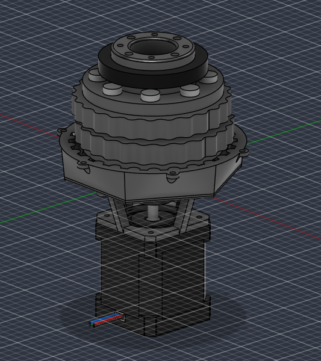

18degrees of freedom
Robotics · Aug 2026 – present
Dexterous robot hand
Developing a tendon-driven robotic hand with custom finger actuation for future motion-data collection in dexterous manipulation research.
View projectMechanical engineering student building robotic mechanisms and useful hardware.
I work across CAD, prototyping, controls, and fabrication—from an 18-DOF robot hand to CNC-machined structures.
University of Central Florida · B.S. Mechanical Engineering, expected 2029Mechanisms, robots, fabrication, and embedded systems.
Robotics · Aug 2026 – present
Developing a tendon-driven robotic hand with custom finger actuation for future motion-data collection in dexterous manipulation research.
View project
Mechanisms · Aug 2026 – present
Designing and fabricating a custom brushless DC motor and cycloidal gearbox for a compact robotic actuator.
View projectRobotics · Jul – Aug 2024
Designed, assembled, and programmed a three-axis delta robot with coordinated stepper control and kinematic analysis.
View projectFabrication · Jun – Aug 2026
Designed two marine-grade plywood arches, prepared permit drawings, and CNC-machined structural parts.
View projectMechanisms · Jul – Aug 2025
Designed a 60-drawer automated storage concept with a two-axis gantry and database-linked inventory tracking.
View projectEmbedded · May – Jun 2026
Developed an ESP32 Bluetooth game device, combining power-circuit design, C++ firmware, BLE, and a TFT display.
View projectHands-on design, fabrication, and team leadership.
Moonlighter Fablab · Miami, FL
Jul 2023 – Aug 2026Maintained and troubleshot 3D printers, Full Spectrum laser cutters, ShopSabre CNC routers, and Bantam CNC mills. Designed parts in Fusion 360 and Illustrator, trained makers, and coordinated fabrication for 20 adult learners while developing FDM and laser-cutting curricula for the NSF-funded Maker Cities program.
MAST@FIU · Miami, FL
May 2024 – May 2026Led 20 members across four competitive robotics teams. Coordinated mechanical design, CAD, fabrication, assembly, and troubleshooting while guiding project timelines and technical development.
I Love It! By Flor · Miami, FL
Jan 2024 – presentEngineered and 3D-printed custom cookie cutters for high-volume baking, accounting for food-grade and durability requirements. Supported large-scale event activations.
I’m studying mechanical engineering at the University of Central Florida with a minor in Intelligent Robotic Systems. I’m part of UCF Formula SAE’s suspension subsystem and UCF ASME.
Before UCF, I completed an Associate of Arts degree and high school diploma through FIU and MAST@FIU dual enrollment. I also worked at my local makerspace, Moonlighter Fablab, helping people use CAD, 3D printers, CNC machines, and laser cutters to make their ideas real.
Tools & methods
B.S. Mechanical Engineering, UCF · Expected May 2029
Open to conversations about mechanical design, robotics, and fabrication.